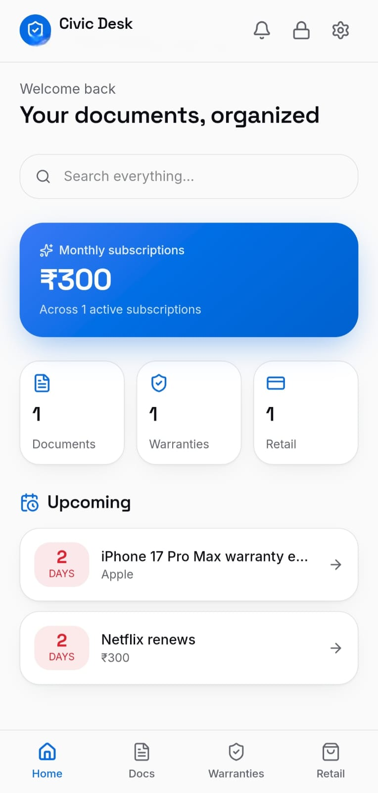

Your Personal Document Command Center.
Scan, summarize, and secure multi-page legal documents and receipts using advanced AI—right from your pocket.
Free to start · No credit card required

Built for trust, speed, and control.
Everything you need to capture and understand your most important documents—without compromising on privacy.
Local-First Security
Your documents are processed on-device for maximum privacy, then encrypted end-to-end with Supabase before they ever touch the cloud.
Sequential AI Scanning
Handle complex multi-page files with confidence. Civic Desk processes each page in sequence, so large documents summarize cleanly without crashing.
Cross-Platform Access
Start on your phone, finish on the web. Seamless cloud storage keeps everything in sync, and push notifications keep you in the loop.